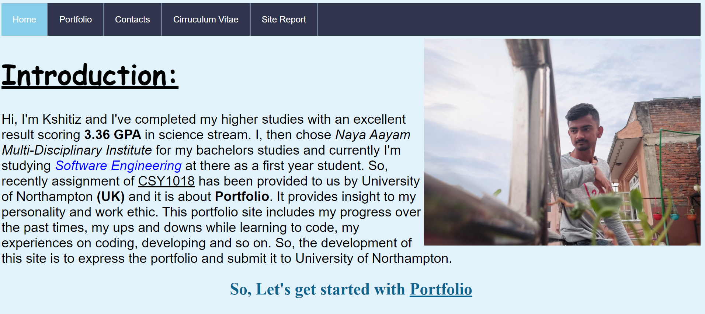

Hi, I am Kshitiz Paudel and I am here to express my experience over time on learning how to code, debug, design and develop the webpage and websites.
I was extremely curious in the field of technology in my previous times. I used to learn HTML and CSS by watching youtube videos and used to make simple websites after gathering lots of ideas from various sources. Later on, I joined Naya Aayam Multi-Disciplinary Institute (NAMI) to study BSc. Software Engineering after knowing it provides british degree in Nepal as NAMI is in partnership with University of Northampton (UK). Since, I love coding and learning non-human languages, I went through a lot of hard times while learning to code. I falled, I failed, I losed hope several times but I refused to give up. I provided a lot of dedications, sacrificed a lot of things to get out of my comfort zone and move one step closer towards my dreams. Our CSY1018 module tutor Mr. Ankit Thapa taught us basic things from beginning. I learned how to push code to github, learned basics about HTML and CSS. Learning have never been that much fun and easier. I learned to design webpages and websites using CSS(Cascading Style Sheets) and make the sites and pages user friendly.
Relfective Discussion encourages student to express and think about their observation, what they have heard or learned. In my case, learning CSY1018 module have been the best experience ever in my learning realm as this module (Web Develpoment) encourages and teaches us to make various websites and webpages. It encourages to detect bugs and debug it effectively. It seems satisfying to make the websites/webpage responsive as it works perfectly in all aspect ratios of device screen. I enjoyed learning and making responsive webpages from this module.
Time to time, I changed my website's looks and designs to make it look more attractive and also I was pretty unsure about using grid display in website, so I changed and remade the website as it was not in grid display layout and neither layouts were consistent across all pages. So, I decided to change my website's layout and all.
Date:17 May, 2021
The above image was the first website made by me for the term 1 assignment. I changed everything from my website as it failed drastically because neither the site was user friendly nor the site was responsive. So, I decided to remake the website using the grid display and finally made the webpage as shown in image below:
Date:22 May, 2021
I was still not happy surfing through my own website as I thought it was quiet non-friendly for some users and I again changed everything and remade the website and this is my final website layout for the current term of CSY1018 module. The present website is user-friendly and responsive too. I literally simplified everything compared to my previous websites and made my site look pretty cool and user-friendly. My present and finalized website is shown below:
Date: 24 May,2021
The above image is final configuration of the website for the current term. The website is user-friendly, simple and responsive as well. Users can find out that each page have same overall website layout and can be able to reach page from a navigation menu. Also, navigation menu is consistent across each page of the website. The site is responsive too, i.e it works correctly on both desktop and mobile. Also, the navigation menu is hidden behind the hamburger icon which occurs only in mobile phone. The navigation menu is consistent across each page of website also in responsive point of view. Since, it was quiet tough to make the navigation menu appear after clicking to the hamburger icon in mobile phone, I took help from the youtube for this purpose. I have given reference for every code which I took from external sources to avoid being victim of academic misconduct.
I chosed blue colored image as background because blue color is a highly peaceful color. Blue color can be specially helpful for stress management as it can encourage a powerful sense of calm. Blue color accelerates the relaxation process after stress in comparision with other colors. Also, I tried to make everything unique as I have used CSS3 gradients in header tag. Navigation menu is quiet unique than others as I have made it transparent. I have used blue colored image as background in all webpages and have given consistent looks and layout across all pages. Also, I have used grid display for website layout. I chosed sans-serif font in almost every pages and cursive font for sub-headings in CV and site report webpage. I have given reference for these fonts too.I have used some logos from other websites in contact page and CV page and I have given reference to those logos. I have used one common external CSS for designing and providing various fonts, styles and colors to webpages and texts.
index.html Validated
portfolio.html Validated
contact.html Validated
cv.html Validated
sitereport.html Validated
styling.css Validated
Edwards, C. (2017) Responsive Menu With Media Queries (Checkbox Trick) - Using Only CSS3. YouTube[online]. Available from: https://youtube.com/watch?v=xMTs8tAapnQ/ [Acessed 23 May 2021]
Used:
The code is used to make the functioning menu bar appear when clicked on hamburger icon in mobile phone.
The code is used in every .html pages in line '18' and '26'. In styling.css line '609' to '612' contains the code from the above referenced youtube video.
[Anon.] [n.d] Solid Backgrounds[online]. Available from: https://www.solidbackgrounds.com/blue-stained-glass-free-website-background-image.html [Accessed 21 May 2021]
Used:
The image is used as consistent background image for all pages of website.
It is used in line '13' of styling.css
[Anon.] (2020) Kernel IT[online]. Available from:https://kernel.sr/914de662ac57138cda4a401ff37b444e/ [Accessed 23 May 2021].
Used:
The logo is used in contact page as it redirects user to my official Facebook page when clicked.
It is presented in line '73' in contact.html
[Anon.] (2021) LOGOS-WORLD[online]. Available from: https://logos-world.net/twitter-logo/ [Accessed 23 May 2021]
Used:
The logo is used in contact page as it redirects user to twitter when clicked.
It is presented in line '77' in contact.html
[Anon.] (2021) flaticon[online]. Available from: https://www.flaticon.com/free-icon/linkedin_174857/ [Accessed 23 May 2021]
Used:
The logo is used in contact page as it redirects user to linkedin when clicked.
It is presented in line '83' in contact.html.
[Anon.] [n.d] LOGOS-WORLD[online]. Available from https://logos-world.net/imageup/Gmail/Gmail_(10).png [Accessed 23 May 2021]
Used:
The logo is used in contact and CV page as it helps user to identify my gmail identity.
It is presented in line '91' in contact.html and in line '104' in cv.html.
[Anon.] [n.d] pngtree[online]. Available from: https://pngtree.com/freepng/home-address-of-the-current-residence_4423992.html [Accessed 23 May 2021]
Used:
The logo is used in contact and CV page as it helps user to identify my permanent address.
It is presented in line '94' in contact.html and in line '101' in cv.html.
[Anon.] [n.d] Dreamstime[online]. Available from: https://thumbs.dreamstime.com/z/phone-icon-black-white-telephone-symbol-vector-illustration-handset-background-eps-format-132728248.jpg [Accessed 26 May 2021]
Used:
The logo is used in CV page as it helps user to identify my personal contact number.
It is presented in line '98' in cv.html.
World Wide Web Consurtium (2008) W3C Validator[online]. Available from: https://validator.w3.org/ [Accessed 29 May 2021]
Used:
The site/validator is used to identify either the HTML or CSS validate or not (in recent case).
Calson, W. (1816) Google Fonts[online]. Available from: https://fonts.google.com/?category=Sans+Serif [Accessed 20 May 2021]
Used:
Sans-serif font is used as font family in almost all webpages.
It is used in line '48' '112' '169' '201' '225' '328' '338' '399' '405' '435' '465' '474' '480' in CSS.
[Anon.] [n.d] Google Fonts[online]. Available from:https://fonts.google.com/?category=Handwriting [Acsessed 20 May 2021]
Used:
Cursive font is used as font family in header, homepage, CV and in site report as well.
It is used in line '26' '121' '130' '359' '427' '457' in CSS.